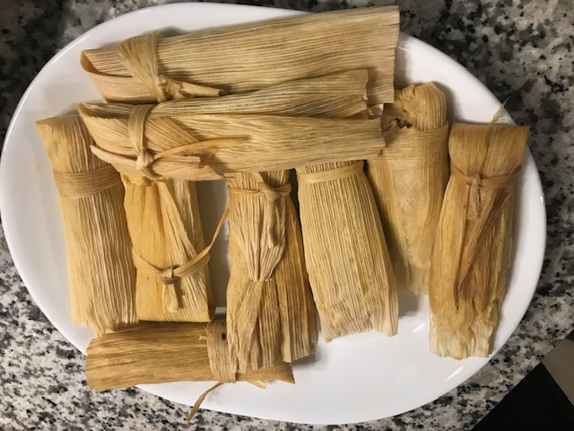

Inspiration
Cooking is an art. Is a language to communicate with people. Is a powerful glue that keep families together. Is a way to celebrate your ethnicity. Food can defy time travel, one bite can take you back in time to your childhood, as well as transport to other places without traveling. By cooking the family dishes, those flavors that you grew up with, you are recreating that experience to others, sharing that family favorite dish. The inspiration for cooking are all the cooks before you that took a risk by creating a dish to be shared, a moment to celebrate, and a dish to be remember by.

Mexican tamales